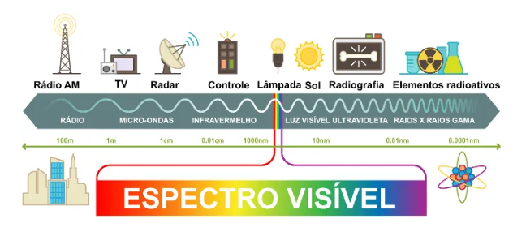

◉ A história das comunicações sem fio
A história das comunicações sem fio começa no século XIX,
com o desenvolvimento do rádio, e inclui o surgimento do Wi-Fi e da tecnologia celular:
• Rádio
A primeira comunicação sem fio foi a transmissão de ondas de rádio, que qualquer um podia interceptar
e ouvir. O primeiro rádio do mundo foi construído por Hertz e era chamado de “Emissor de faísca”.
• Telegrafia sem fios
O italiano Guglielmo Marconi foi o responsável pelo primeiro sistema de telégrafos sem fios, em 1899,
no Canal da Mancha.
• Fotofone
Inventado por Alexander Graham Bell em 1880, o fotofone era um sistema de comunicação livre de fios,
mas usava luz para transmitir sinais de voz.
• Wi-Fi
Os primeiros testes do Wi-Fi foram realizados em 1997 pelo IEEE, com uma taxa de transmissão máxima
de 1 Mbps. Em 1999, seis empresas formaram o Wi-Fi Alliance, responsável pela distribuição da tecnologia.
A atriz Hedy Lamarr criou e patenteou um torpedo guiado por rádio durante a Segunda Guerra Mundial,
que serviu como base para o Wi-Fi.
• Tecnologia celular
A tecnologia celular divide áreas geográficas em células, cada uma com uma estação base e uma torre
com antena. A torre pode captar um sinal a até 40 quilômetros de distância.
◉ Campo magnético e campo elétrico
A principal diferença entre o campo magnético e o campo elétrico é a sua fonte. Enquanto o campo
magnético permeia o espaço de um dipolo, o campo elétrico é formado ao redor de cargas elétricas.
No campo elétrico, a força exercida pelas cargas é chamada de força elétrica. Além disso, a unidade
de medida do campo elétrico é newton/coulomb (N/C), enquanto a do campo magnético é o tesla (T).
No campo elétrico, as linhas de campo saem da carga positiva e entram na carga negativa, enquanto
no campo magnético as linhas de campo saem do polo norte e vão para o polo sul. Para os dois campos,
as cargas ou polos iguais se repelem, e cargas ou polos diferentes se atraem.
➤ O que são ondas eletromagnéticas?
As ondas eletromagnéticas surgem com base na interação entre campos elétricos ou campos magnéticos variáveis.
Essas se propagam no vácuo com a mesma velocidade que a luz, cerca de 300 mil quilômetros por segundo.
Diferentemente das ondas mecânicas, como o som, as ondas eletromagnéticas podem propagar-se tanto em meios
materiais quanto no vácuo. Por tratarem-se de fenômenos ondulatórios, elas podem sofrer reflexão, refração,
absorção, difração, interferência, espalhamento e polarização.
As ondas eletromagnéticas foram previstas e teorizadas pelo físico e matemático escocês James Clerk Maxwell,
que unificou as equações da eletricidade e do magnetismo já existentes (equações de Faraday, Ampére e Gauss)
em equações de onda.
"Por meio de suas equações, Maxwell conseguiu calcular o módulo da velocidade de propagação das ondas
eletromagnéticas. A confirmação experimental da existência das ondas eletromagnéticas só surgiu cerca
de uma década mais tarde, após experimentos realizados pelo físico alemão Heinrich Hertz."
"Todas as ondas eletromagnéticas apresentam frequência de oscilação, comprimento de onda e amplitude.
Além disso, o comprimento de onda e a frequência são grandezas inversamente proporcionais, por isso,
ondas de alta frequência, como os raios x ou raios gama, apresentaram comprimentos muito pequenos. A
figura seguinte mostra o espectro eletromagnético e as diferentes faixas de ondas eletromagnéticas existentes,
observe:"

➤ Características das ondas eletromagnéticas
Algumas características próprias das ondas eletromagnéticas:
• São transversais, isto é, a perturbação responsável por produzi-las acontece em uma direção perpendicular à
sua direção de propagação. Nas ondas eletromagnéticas, o campo elétrico, o campo magnético e a direção de
propagação são perpendiculares entre si;
• Propagam-se no vácuo com a mesma velocidade que a luz visível: 2,99792458.108 m/s, simbolizada pela letra c;
• Sua amplitude diz respeito à sua intensidade, quanto maior for a amplitude de uma onda eletromagnética, maior é
a perturbação que ela é capaz de produzir;
• São tridimensionais, isto é, depois de produzidas, propagam-se igualmente em todas as direções;
• Quando atravessam meios materiais, como o ar ou a água, sua velocidade de propagação diminui, enquanto o seu
comprimento de onda aumenta, de modo que a sua frequência não se altera. Esse fenômeno é conhecido como refração."
➤ Ondas eletromagnéticas no dia a dia
Confira alguns exemplos de ondas eletromagnéticas existentes e bastante usados em nosso cotidiano:
• Ondas de rádio: são largamente utilizadas nas telecomunicações. O sinal de rádio, televisão e celular encontra-se
nessa faixa de frequência.
• Micro-ondas: também são muito utilizadas nas telecomunicações. Os roteadores de internet sem fio, popularmente
conhecidos como Wi-fi, utilizam micro-ondas de frequências que variam entre 2,4 GHz e 5,8 GHz.
• Infravermelho: é também conhecido como onda de calor. Alguns dispositivos de segurança equipados com visão noturna
são capazes de captá-lo. O infravermelho é a onda emitida quando usamos um controle remoto.
• Luz visível: é a faixa de ondas eletromagnéticas que se localiza entre as frequências de 480 THz e 750 THz.
• Ultravioleta: após certas frequências, passa a ser considerado uma radiação ionizante, isto é, uma onda
eletromagnética com potencial de arrancar elétrons das moléculas, ocasionando o surgimento de anomalias celulares
que podem evoluir para um câncer, por exemplo. Essa frequência de onda eletromagnética é bastante utilizada por
peritos criminais para a detecção de materiais biológicos, como sangue e saliva; sua capacidade de ionização também
permite usá-la para a esterilização de utensílios cirúrgicos, seringas, recipientes etc.
• Raios x: chegam à Terra em pouca quantidade devido à presença da atmosfera terrestre. Essas ondas eletromagnéticas
têm frequências muito altas e grande poder de penetração, por isso, são utilizadas para a obtenção de imagens de
ossos e articulações e para o tratamento de tumores, por meio da radioterapia.
• Raios gama: são produzidos por reações nucleares, nas quais os níveis de energia do núcleo dos átomos sofrem
variações. Essas ondas são extremamente energéticas e apresentam alto poder de penetração. Os raios gama são
usados para estudos astronômicos e para a indução de reações nucleares.
◉ As Equações de Maxwell
Baseando-se nos estudos de Michael Faraday, Maxwell unificou, em 1864, todos os fenômenos elétricos e magnéticos
observáveis em um trabalho que estabeleceu conexões entre as várias teorias da época, derivando uma das mais
elegantes teorias já formuladas.
Maxwell demonstrou, com essa nova teoria, que todos os fenômenos elétricos e magnéticos poderiam ser descritos em
apenas quatro equações, conhecidas atualmente como Equações de Maxwell.
Essas são as equações básicas para o eletromagnetismo, assim como a lei da gravitação universal e as três leis de
Newton são fundamentais para a Mecânica Clássica.
Não serão apresentadas nesse artigo as deduções matemáticas das equações de Maxwell, uma vez que essas necessitam
do conhecimento do Cálculo Diferencial e Integral, que somente é estudado na íntegra em cursos superiores.
As equações de Maxwell para o eletromagnetismo constam da unificação entre as Leis de Gauss, para a eletricidade
e para o magnetismo, a Lei de Ampère generalizada e a Lei de Faraday para a Indução eletromagnética.
Segue então as equações de Maxwell:
➤ Lei de Gauss para a eletricidade:
Essa é a primeira das quatro equações de Maxwell, proposta originalmente pelo matemático alemão Carl Friedrich
Gauss (1777-1855), é o equivalente à lei de Coulomb em situações estáticas. Ela relaciona os campos elétricos e
suas fontes, as cargas elétricas, e pode ser aplicada mesmo para campos elétricos variáveis com o tempo.
➤ Lei de Gauss para o magnetismo:
Esta lei é equivalente à primeira, mas aplicável aos campos magnéticos e evidenciando ainda a não existência de
monopolos magnéticos (não existe polo sul ou polo norte isolado). De acordo com essa lei, as linhas de campo
magnético são contínuas, ao contrário das linhas de força de um campo elétrico que se originam em cargas elétricas
positivas e terminam em cargas elétricas negativas.
➤ Lei de Ampère:
A lei de Ampère descreve a relação entre um campo magnético e a corrente elétrica que o origina. Ela estabelece
que um campo magnético é sempre produzido por uma corrente elétrica ou por um campo elétrico variável.
Essa segunda maneira de se obter um campo magnético foi prevista pelo próprio Maxwell, com base na simetria
de natureza: se um campo magnético variável induz uma corrente elétrica, e consequentemente um campo elétrico,
então um campo elétrico variável deve induzir um campo magnético.
➤ Lei de Faraday:
A quarta das equações de Maxwell descreve as características do campo elétrico originando um fluxo magnético variável.
Os campos magnéticos originados são variáveis no tempo, gerando assim campos elétricos do tipo rotacionais.
Até o final do século XIX, acreditava-se que com estas equações não havia mais nada para ser descoberto na física.
Porém, em 1900, Max Planck deu inicio à chamada Física quântica, com seus postulados sobre a radiação de corpo negro.
Em 1905, Albert Einstein revoluciona de uma vez por todas os conhecimentos da ciência, lançando a Teoria da
Relatividade e o Efeito Fotoelétrico, abrindo caminho para o maior desenvolvimento científico da história.
As equações de Maxwell são consideradas o marco final do que chamamos de Mecânica Clássica.
Maxwell foi o primeiro físico a encontrar através de cálculos matemáticos a velocidade das ondas eletromagnéticas,
tudo graças às suas famosas equações.